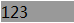

关于 'list-style-type' 属性说明请参照 W3C CSS 2.1 规范： http://www.w3.org/TR/CSS21/generate.html#propdef-list-style-type
关于 'list-style-position' 属性说明请参照 W3C CSS 2.1 规范： http://www.w3.org/TR/CSS21/generate.html#propdef-list-style-position
IE6 IE7 IE8(Q) 中如果列表元素设置 'list-style-type:none' 时 'list-style-position:inside' 设置产生的标记框不消失，依然占据布局位置。
会造成 LI 内文字定位不准确。
| IE6 IE7 IE8(Q) |
|---|
首先规范中对 'list-style-position:inside' 设置情况有如下说明：
The marker box is the first inline box in the principal block box, after which the element's content flows.
即此设置会将标记框 (marker box) 产生在行框最前方。之后规范中对 'list-style-type' 的描述有如下一句：
The value 'none' specifies no marker, otherwise there are three types of marker: glyphs, numbering systems, and alphabetic systems.
即当设置 'list-style-style:none' 时没有标记块。
综合理解，即当 'list-style-style:none' 和 'list-style-type:none' 样式同时设置时，标记框将不会显示。
实际情况又是如何呢，分析以下代码：
<li style="list-style-type:none; list-style-position:inside;
background:#eee">123</li>
浏览器实际效果如下：
| IE6 IE7 IE8(Q) | IE8(S) Safari Chrome Firefox Opera |
|---|---|
|  |
根据实际情况可以看出，在 IE6 IE7 IE8(Q) 浏览器中 LI 元素内 'list-style-position:inside' 属性设置在行框前的标记框还存在，并没有因为 'list-style-type:none' 样式设置而消失。
IE8(S) 遵循规范修复了这个问题，与 Safari Chrome Firefox Opera 最终渲染表现一致。
为了避免此问题，建议在设置 'list-style-type:none' 时仅将 'list-style-position' 属性值设置为默认的 'outside'。
| 操作系统版本: | Windows 7 Ultimate build 7600 |
|---|---|
| 浏览器版本: |
IE6
IE7 IE8 Firefox 3.5.6 Chrome 4.0.266.0 dev Safari 4.0.4 Opera 10.60 |
| 测试页面: | list_marker_box.html |
| 本文更新时间: | 2010-07-21 |
LI marker list-style-position 列表 标记 空白区域